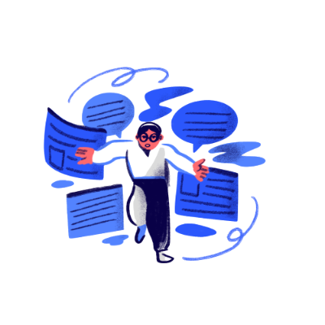
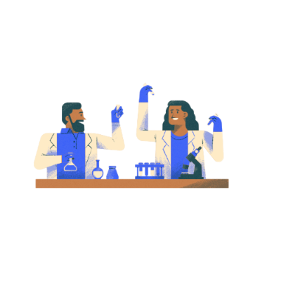

A solução se chama Gerência Lab.
Só quem vivencia a rotina de um laboratório sabe o quanto ela pode ser ineficiente, confusa e estressante. Mas será que existe um jeito de descomplicar os processos e acabar com as dores de cabeça? A solução se chama Gerência Lab. Um sistema intuitivo, dinâmico e flexível para o seu laboratório.Tenha todas as informações de qualquer processo realizado no seu laboratório em uma única tela. Controle tudo pelo sistema.

Sistema em Conformidade com ISO/IEC 17025:2017
Eleve o desempenho do seu laboratório com o Gerencialab, a solução ideal para garantir conformidade com a ISO/IEC 17025:2017.Nossa plataforma simplifica a gestão da qualidade, assegurandoimparcialidade, confidencialidade e retenção eficiente de registros.Simplifique processos e alcance a excelência.